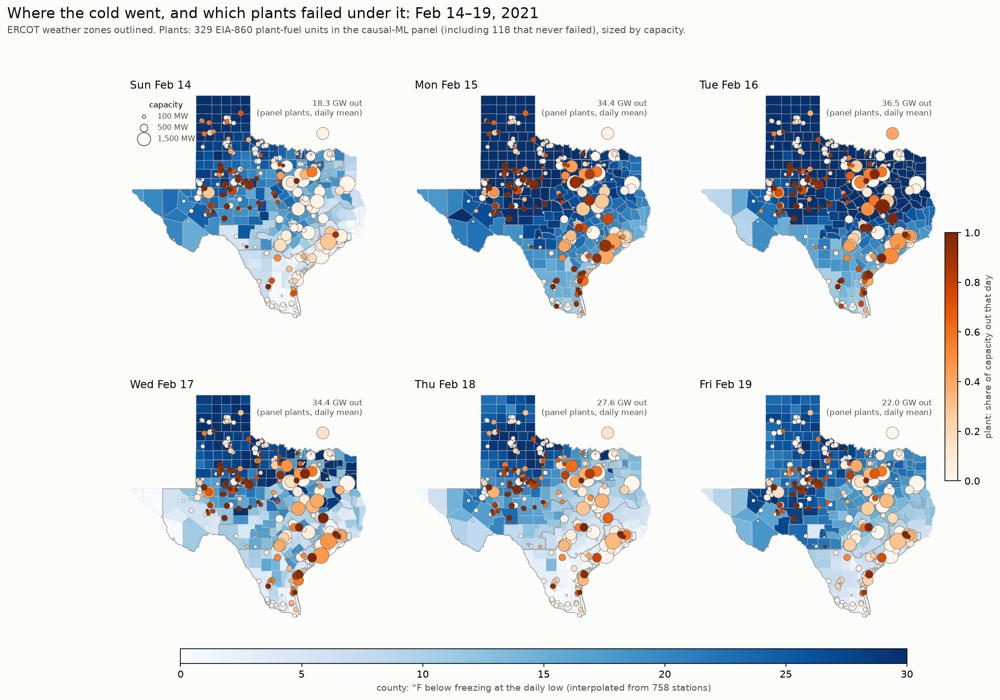
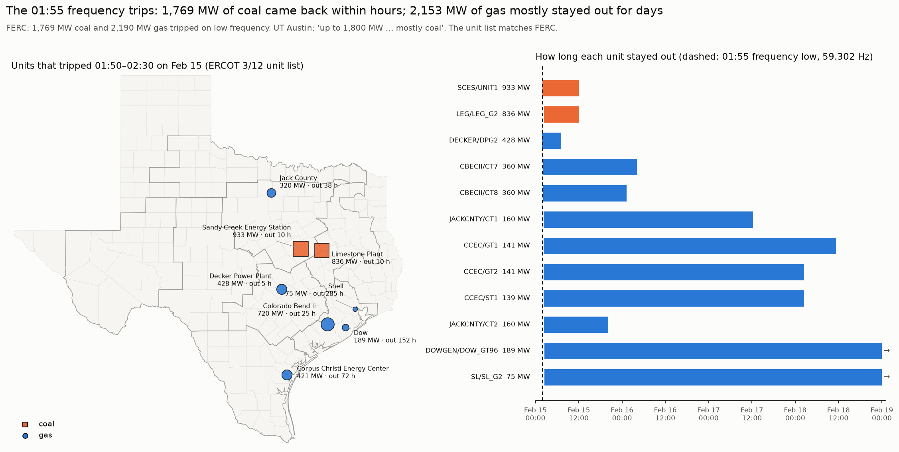
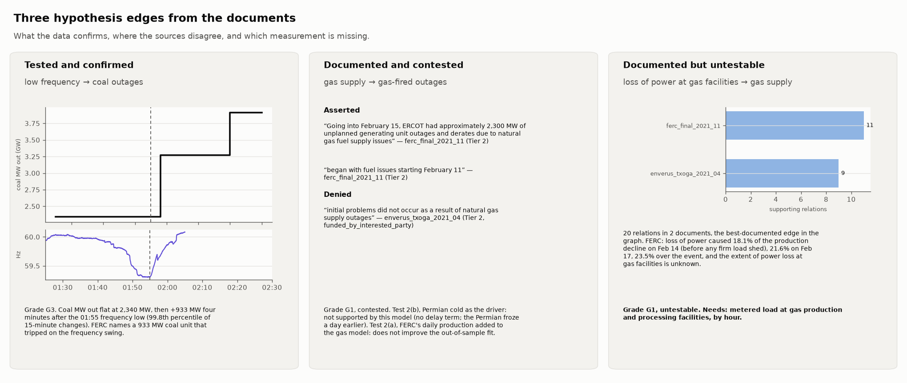
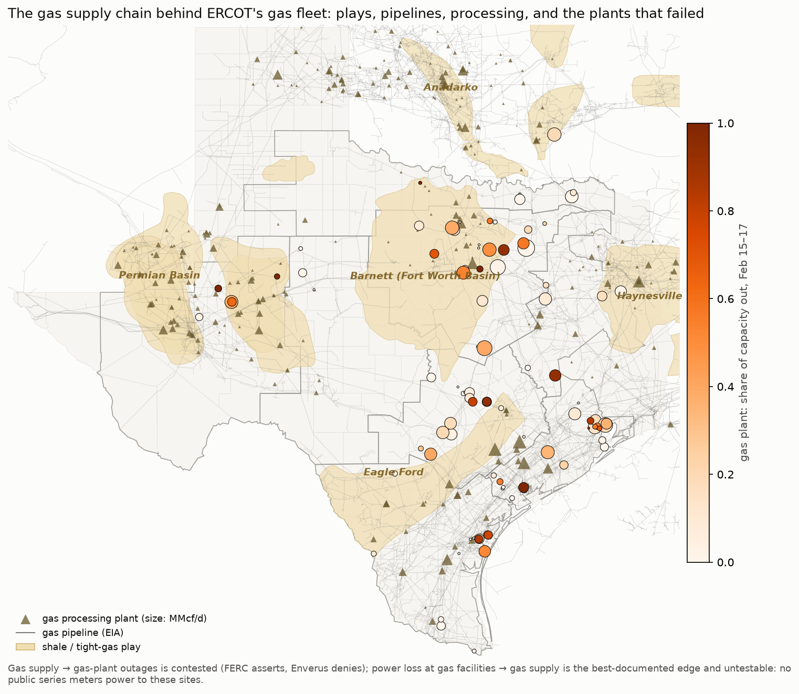
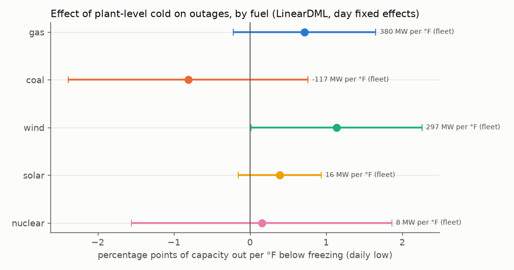
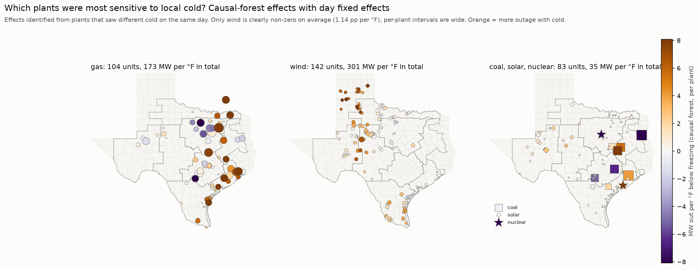
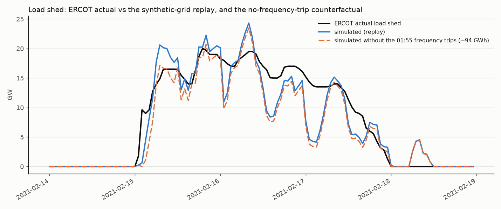
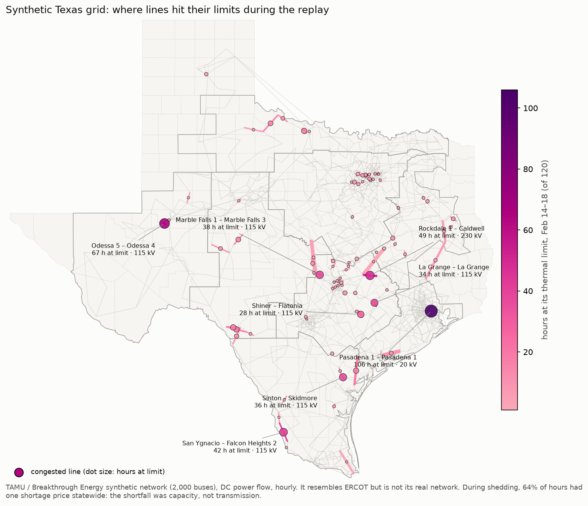

Four reports, four stories. Measured data decides which ones hold.
The 2021 Texas blackout left a stack of official reports that disagree on timing, magnitudes and causes. This project turns those reports into a causal knowledge graph, checks each claim against measured data, tests the causal claims, and replays the event on a grid model: what the data confirms, where the sources are contested, and what is untestable until someone measures it.


The record of the blackout contradicts itself
ERCOT, FERC and NERC, a university panel, an industry-funded consultant and the news all describe the same week. They disagree on when load shedding began, how much generation each fuel lost, and what caused it. Some of those disagreements are real. Others only look like disagreements: two numbers measured over different regions, windows or denominators.
The approach here is to stop arguing from the text. Every claim becomes a node in a graph with its source, its scope and a trust tier. Then the claims are checked against what was measured: ERCOT's minute-level outage and frequency data, unit outage lists, EIA demand, and NOAA temperatures from 758 stations.
From report text to tested causal claims
A language model reads the reports, but it only extracts. Trust, contradictions, grounding and grades are all assigned by deterministic code that the model never sees.
Bottom-up extraction
DeepSeek read 65 report sections (about 72k words, $1.29) and extracted entities, events, causal relations and quantitative claims with their scope. Every item must quote its source verbatim, and every number must appear in its quote.
Trust tiers, by code
Measurements, first-party reports, independent analysis and news get different tiers. Flags like "interested party" or "funded by an interested party" lower trust without changing tier.
Grounding
Claims are matched to measured series by unit, region and time. Of 57 checkable ERCOT claims, 29 were checked: 24 agree, 5 disagree. Each document gets a reliability score.
Hypotheses, pre-registered
Causal claims are grouped into 57 families. How each concept is measured was committed before any test ran. Models must beat weather-free baselines and placebos out of sample.
Causal ML
EIA-860 plants matched to ERCOT's outage list (88% of outage energy). Double ML and causal forests with day fixed effects, using distance to basins, pipelines and the coast as confounders.
Grid replay
TAMU's synthetic 2,000-bus Texas grid, replayed hour by hour with a DC optimal power flow. Scenarios remove specific outages and measure the change in load shed.
Grades. G0 hedged · G1 asserted in text · G2 passed a test · G3 passed a test with an independent source. Timing-only checks never pass.
A graph with trust built into its layers
Every extracted item hangs off the document that said it, and every document sits in a trust tier. Measured data sits at the bottom. Claims are only as good as the measurements they survive.
Documents are stacked by trust tier above the measured series. Each link is a group of claims checked against a measurement: 24 agree, 5 disagree. Select a document or a link to read the claims.
Table view: the 29 checked claims
Above the evidence, causal claims are grouped by concept: which kind of event the documents say caused which. Each edge carries its grade and what testing it against measured data showed. Select an edge or a concept.
Table view: every causal edge
The coal contradiction: four sources, four stories
Did coal fail because of the cold, or because the grid's frequency collapsed? The sources pull in different directions.
| Source | What it says about coal |
|---|---|
| FERC/NERC final report Tier 2 | "a 933 MW coal unit tripped due to the rapidly-changing frequency, which affected the boiler controls, caused a high boiler pressure condition, and tripped the unit" "low frequency, or the rate of frequency change, also caused approximately 1,769 MW of coal generation and 2,190 MW of gas generation to trip or derate." |
| UT Austin timeline Tier 2 · held out | "Grid frequency deviations were reported to be responsible for up to 1,800 MW of outages (8 total units), mostly coal, at 2 a.m. on February 15." |
| System time series our test | Cold explains coal outages: a fail-and-restart model with temperature beats weather-free baselines by 5.9× out of sample (grade G3). |
| Plant cross-section our causal ML | Cold at the plant does not: −0.8 percentage points per °F across 11 coal units, with an interval that includes zero. |


What the measured data settles
- The frequency trips were real, and FERC's numbers are exact. ERCOT's own unit outage list, read independently of any report, has 1,769 MW of coal tripping in the minutes after the 01:55 frequency low (Sandy Creek 933 MW and Limestone 836 MW): FERC's figure to the megawatt. It also has 2,153 MW of gas (FERC: 2,190).
- UT Austin's "mostly coal" doesn't hold. FERC's own figures and ERCOT's list (2 coal units, 10 gas units starting 01:50–02:30) both put more gas than coal in those trips. "Up to 1,800 MW" matches the coal part alone.
- The coal trips were brief; the gas ones were not. Both coal units were back by noon. The gas units that tripped in the same minutes stayed out for a median of 42 hours.
- ERCOT's minute data confirms the mechanism. Coal MW out was flat at 2,340 MW for at least 30 minutes, then stepped up 933 MW four minutes after the 01:55 low (59.302 Hz): the 99.8th percentile of 15-minute changes.
- Still open: coal capacity that stayed out for days has no measured cause. Plant-level cold doesn't explain it, which leaves FERC's frozen fuel handling, and no public series measures that.
Would removing coal have saved the grid?
No. In the replay on a synthetic Texas grid, removing every coal outage for the whole week cuts load shed by 29% and delays its start by two hours, but the blackout still happens.
| Scenario | Load shed | Shed starts |
|---|---|---|
| As it happened (replay) | 919 GWh | Feb 15, 01:00 |
| No 01:55 frequency trips (coal + gas) | −94 GWh (coal 16, gas 78) | 01:00 |
| No coal outages at all | 650 GWh (−29%) | 03:00 |
The 29% is a counterfactual change in shed, not coal's share of outages. Shed is roughly max(0, demand − available), so it depends on how close the system was to the line. The replay is hourly.
Settled by measured data
| Disagreement | Resolution |
|---|---|
| When load shed began: FERC "1:15 a.m." vs UT Austin 1:20 vs Texas Tribune 1:25 | ERCOT minute data: 01:20. FERC's four other statements, Enverus and UT Austin are right; FERC's single 1:15 and the Tribune are 5 minutes off. |
| Fuel as a cause: ERCOT 12% vs FERC 31.4% | Not a conflict: MW at the peak minute in ERCOT, vs counts of events across three regions over 13 days. |
| ERCOT board deck: 52,277 MW peak "on February 17" | A PDF layout error caught by the data: the peak was 2/16 07:36. |
| The 3/4 vs 3/12 unit lists: "138 units added" | 135 of the 138 are redacted rows being disclosed, not new outages. |
The gas–power edges
Gas plants need gas; gas production needs electricity. The graph sorts each link in that loop into confirmed, contested or untestable.


Gas supply → gas-plant outages: contested
FERC: "Going into February 15, ERCOT had approximately 2,300 MW of unplanned generating unit outages and derates due to natural gas fuel supply issues." Enverus, funded by the Texas Oil and Gas Association: "initial problems did not occur as a result of natural gas supply outages." The models neither support nor refute the edge.
Power loss at gas facilities → gas supply: untestable
The best-documented edge: 20 relations across FERC and Enverus (FERC: loss of power caused 18.1% of the production decline on Feb 14, 21.6% on Feb 17, 23.5% over the event). No public series meters electricity to gas facilities.


What the cold did at each plant, and where the grid strained




Wind depends on the reference. It was 16.9 GW out (Feb 14–17 mean) against seasonal ratings, which are about nameplate, but only about 6.1 GW below its own early-February output (10.3 → 4.2 GW). Gas was 20.6 GW out against seasonal ratings.




What this can't tell you
- One storm. The grid is synthetic (it resembles ERCOT; it is not its network), DC, hourly and steady-state, with no frequency dynamics, so collapse risk is not modelled.
- Outage MW is measured against seasonal ratings; for wind that is about nameplate, not expected output.
- The outage list is self-reported and covers about 70% of measured gas MW out.
- Plant matching is rule-based; 57 ambiguous units are excluded. Cold is interpolated.
- FERC's daily gas production (Figure 35) was read off the chart by code, within 1 Bcf/d of FERC's stated totals.
- Causal-ML intervals ignore spatial correlation.
- Every assumption is logged as Verified, Assumed or Choice in docs/ASSUMPTIONS.md. Hand labels and mismatch reviews written by the model are disclosed and not yet checked by a person.
Every number on this page comes from code
Each stage writes its own folder in results/. Cached model responses replay for free, so no API key
is needed to rebuild the results.
# Python ≥ 3.10, uv, make, pdftotext git clone https://github.com/MJRobillard/CausalKnowledgeGraph-Uri cd CausalKnowledgeGraph-Uri uv sync make test # 54 tests, no API calls make data # third-party documents, public downloads, the TAMU grid make all # every stage after extraction, about 15 minutes
Sources, citations and terms for every dataset are in data/README.md. Copyrighted news articles and the Enverus and UT Austin reports are not redistributed; a script downloads them and checks them against the copies used here.